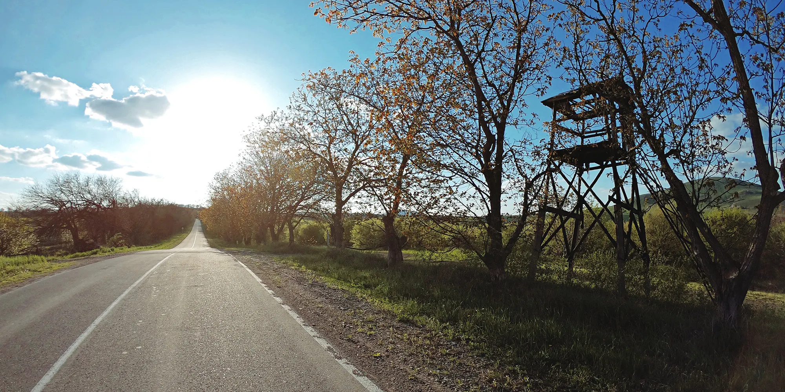

Вход

Маршрут пролегает в республике Карачаево-Черкесия вдоль реки Большой Зеленчук. Старт из посёлка Нижний Архыз от автомобильной стоянки. Асфальт на 5+, кроме дороги от п.Архыз - Горнолыжный курорт Архыз, попадаются разбитые участки.
Дорога идет мимо поселков Нижний Архыз, Архыз, горнолыжного курорта Архыз. Разворачиваемся за посёлком “Лунная поляна”, где заканчивается асфальт (по сотоянию на 2021 год)
Возвращаемся тойже дорогой, но в Нижнем Архызе поворачиваем направо на подъем к «Большму Телескопу Азимутальному», кстати, крупнейшему в Евразии. Нас ждет восхождение до высоты 2056м над у.м., с общим набором 848м.
Видео ролик из одного заезда по данному маршруту https://youtu.be/Z7CvdpWR09g
Общие данные по маршруту:
Старт: Автомобильная стоянка, рядом “Ликом Христа”
Разворот: п.Лунная поляна
Протяженность: 118км
Набор высоты: 1702м
Финиш: Автомобильная стоянка, рядом “Ликом Христа”
Скачать GPX